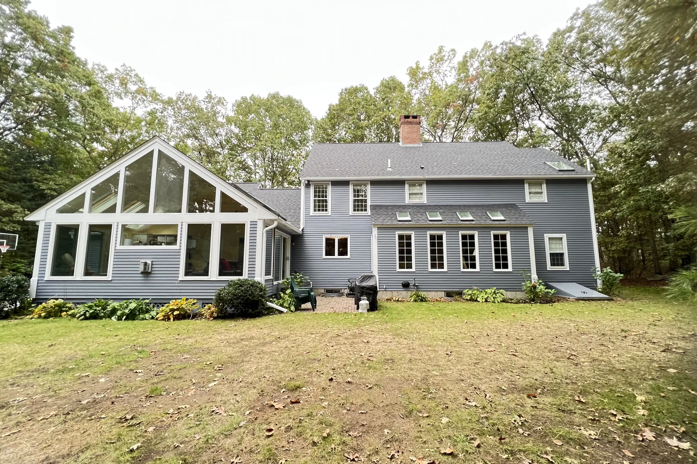
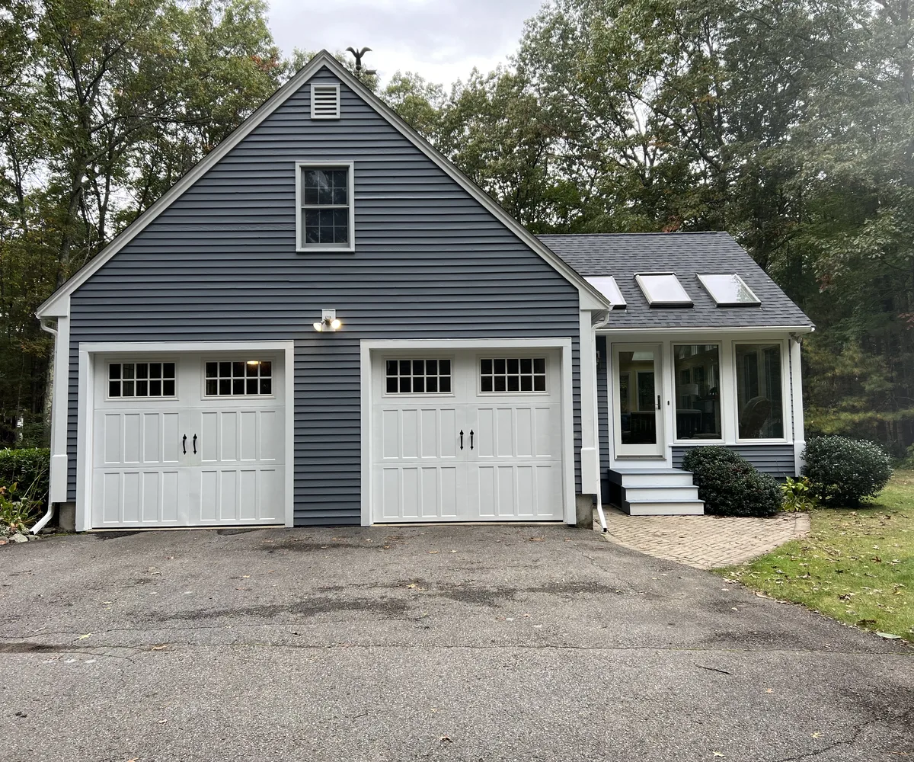
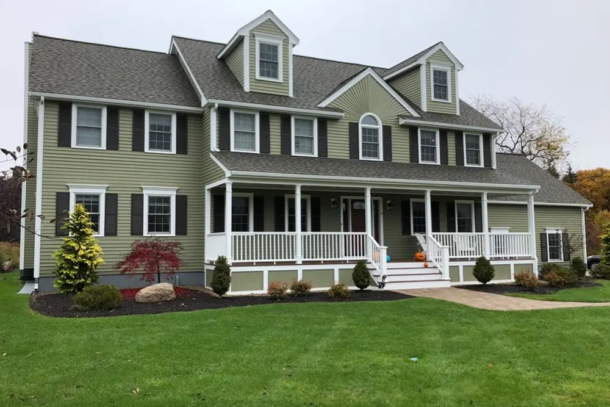
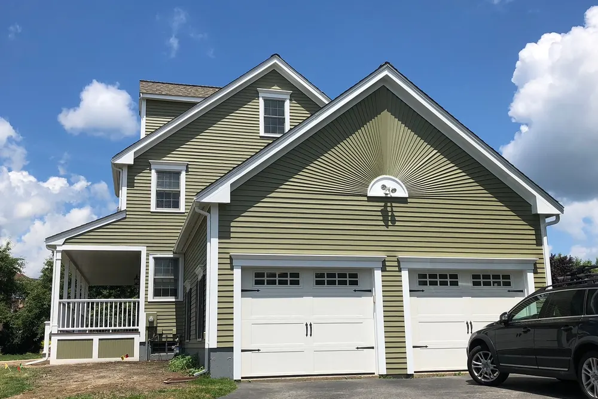
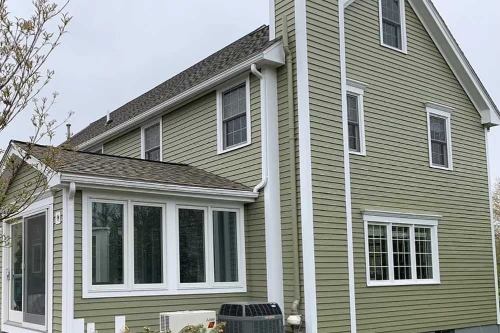
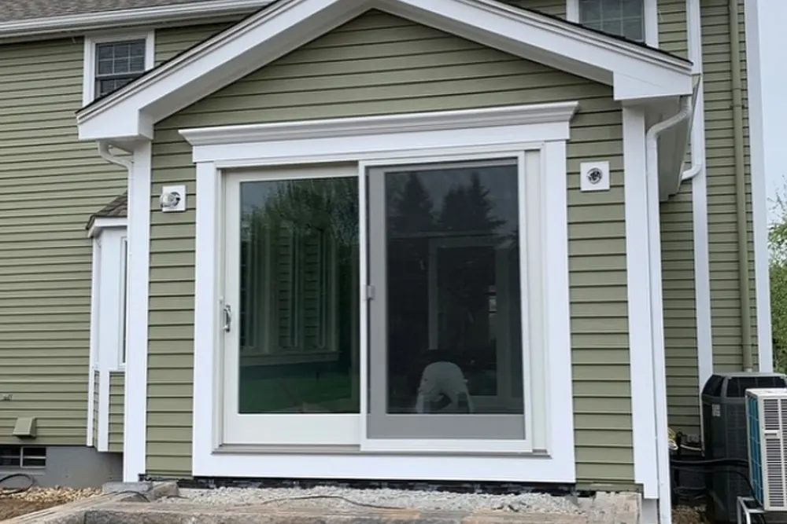
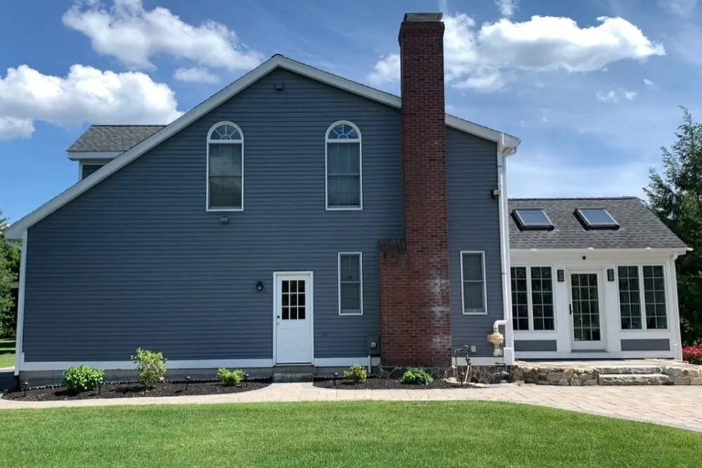
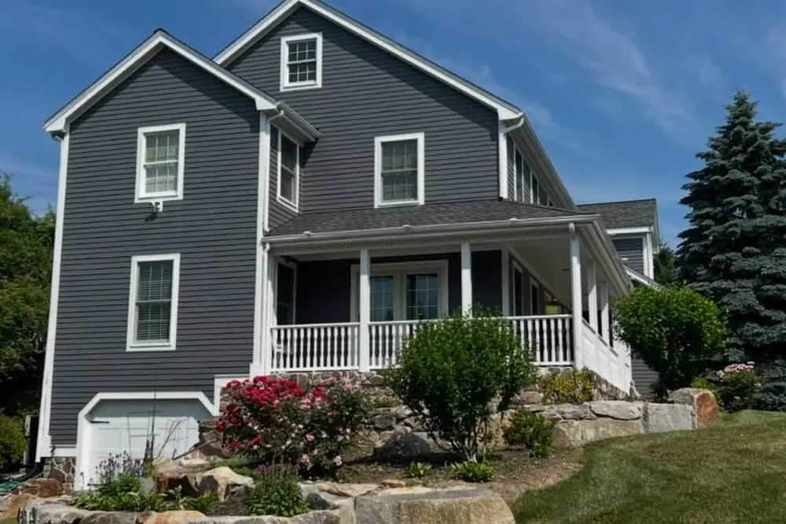

Exterior painting in Massachusetts
Exterior painting that protects the house, not just the color
Exterior painting by DeFaria Construction starts with repairs and prep, then primer and two finish coats on siding, trim, doors and porches. As exterior house painters with a carpentry crew, we fix rotted wood before we paint it. Owner-led work across Essex and Middlesex County, Massachusetts.
The short answer
What does professional exterior painting include?

Exterior painting on a Massachusetts house is mostly preparation. Salt air on the North Shore, freeze and thaw cycles and strong summer sun break paint down, and new paint over loose paint fails fast. A professional exterior repaint includes:
- Washing the siding and trim to remove dirt, mildew and chalk.
- Scraping and sanding loose and peeling paint.
- Replacing rotted trim, sills and boards before painting.
- Caulking gaps and priming every bare spot.
- Two finish coats on siding, trim, doors, shutters and porches.
- Protecting plants, walkways, windows and the yard, with daily cleanup.
DeFaria Construction is a carpentry and remodeling company, not a paint-only crew, so the same team that paints can repair the wood underneath.
Cost
How much does exterior painting cost in Massachusetts in 2026?
Typical 2026 ranges in Essex and Middlesex County for labor, primer and quality exterior paint. The condition of the old paint matters more than the size of the house, so the final number always comes in a written estimate after we see it.
| Scope | Typical 2026 range | What moves it |
|---|---|---|
| Small ranch or cape, siding and trim | $5,000 to $10,000 | Peeling, number of colors, height |
| Typical colonial, siding and trim | $8,000 to $18,000 | Two stories, scraping, trim detail |
| Large or very detailed home | $18,000 to $35,000+ | Size, height, ornate trim, lead-safe work |
| Trim, doors and shutters only | $2,500 to $7,000 | Amount of trim, repairs, number of doors |
| Front door, both sides | $350 to $800 | Panel detail, color change, hardware |
| Rotted trim replacement before painting | $15 to $45 per linear foot | Wood or PVC, profile, access |
Pre-1978 homes may need lead-safe work practices, which add containment and cleanup time. We include that in the price from the start instead of adding it later.
Prep
Prep is the job: how we get a house ready for paint
- Walkthrough to check siding, trim, windows and old paint.
- Protect plants, walkways, windows and outdoor fixtures.
- Gentle washing to remove dirt, mildew and chalky residue.
- Scrape and sand loose paint, feather the edges.
- Replace or repair rotted wood, set nails, fill holes.
- Caulk joints and prime bare wood and repairs.
- Two finish coats, brushed and rolled where it matters.
- Final walkthrough, touch-ups and cleanup.
Skipping any of these steps is why many exterior paint jobs peel within a few seasons.
Lead-safe work
Older homes and lead paint: the rules that apply
Most houses in Lynn, Salem, Beverly and the older towns of Essex and Middlesex County were built before 1978, when lead paint was common. When old paint is scraped or sanded, the rules are clear:
- The federal EPA Renovation, Repair and Painting (RRP) rule applies to paid work that disturbs paint in homes built before 1978.
- Massachusetts runs its own lead-safe renovation program, which requires a certified contractor for this work.
- Work areas are contained with plastic sheeting, dust is controlled and paint chips are cleaned up and disposed of properly.
- Open-flame burning, and power sanding or planing without HEPA dust collection, are prohibited under the RRP rule.
- Homes with children under six may also fall under the Massachusetts Lead Law.
We follow these rules on every pre-1978 house, and we explain in the estimate how they apply to your home, what they add to the job and how the work is done.
Materials
Paint and materials for New England weather
- 100 percent acrylic exterior paint for siding and trim, which stays flexible through freeze and thaw.
- Oil or bonding primer over old oil-based paint and bare wood, as the surface requires.
- Paintable, flexible exterior caulk at joints and trim.
- Satin or low-luster on siding, semi-gloss on trim and doors.
- Mildew-resistant finishes on shaded, damp walls.
- PVC or primed wood for replacement trim.
We name the product line in the estimate, not just the color, so you know exactly what goes on your house.
Real DeFaria work
Exterior work from our own projects
Real photos from DeFaria exterior jobs in Westford, MA: fresh paint, replaced trim, new siding and the finished houses.






Siding types
Painting different siding: wood, cedar shingles and fiber cement
Each material needs a different approach:
- Wood clapboard: the classic New England siding. Needs careful scraping, priming of bare spots and caulking at joints.
- Cedar shingles: can be painted or stained; old paint on shingles often peels in patches and needs more prep.
- Fiber cement: holds paint very well; repainting is mostly about cleaning and color.
- Vinyl: can be painted with vinyl-safe colors, but dark colors can warp it, so we advise case by case.
- Trim, porches and railings: the parts that weather first and show the most.
Best season
The best time to paint a house exterior in Massachusetts
Exterior painting in Massachusetts runs from late spring to early fall. Every paint has a minimum application temperature on its label, often between 35 and 50 degrees, and the surface has to stay above it while the paint cures. Morning dew, rain in the forecast and cold nights all matter.
- Spring: good temperatures, but book early because schedules fill fast.
- Summer: long days; we avoid painting walls in direct midday sun.
- Early fall: often the best weather for paint, until nights get too cold.
- Late fall and winter: time to plan, get the estimate and pick colors.
If you call in the fall or winter, we can walk the house, give you a fixed price and reserve a spring start.
Carpentry first
Rotted trim and wood repair before painting
Paint covers wood; it does not fix it. Window sills, corner boards, fascia, porch parts and the bottom of door casings are where water sits and rot starts. Painting over soft wood traps moisture and the problem comes back.
Because DeFaria Construction is a carpentry company, our crew replaces rotted pieces with new wood or PVC, matches the profile, primes everything and then paints. You get one contractor for repairs and paint, and one schedule.
Bigger repairs and new trim are part of our custom finish carpentry work.
Local homes
Typical homes we see on the North Shore and in Middlesex County
Our area has colonials, capes, two-family homes and Victorians in towns like Lynn, Salem, Beverly, Swampscott and Peabody, and twentieth century colonials, capes and ranches across Middlesex County. Homes near the coast deal with salt air and wind; homes under big trees deal with shade, moss and mildew.
Each situation changes the prep and the products. That is why we look at the house in person before recommending anything.
Color
Choosing exterior colors that last
- Test large samples on two sides of the house and look at them at different times of day.
- Very dark colors absorb heat and can fade faster on sunny walls.
- Check with your town if you live in a historic district.
- Pick trim, door and shutter colors together with the siding color.
- Think about the roof color, which does not change.
We bring samples and help you narrow it down before work starts.
Common mistakes
Common exterior painting mistakes
- Painting over peeling or chalky paint without proper prep.
- Painting in cold, damp or very hot conditions against the label.
- One coat instead of two to cut the price.
- Painting over rotted wood instead of replacing it.
- Ignoring lead-safe rules on a pre-1978 house.
- Comparing quotes that do not include the same prep and repairs.
A detailed estimate lists the prep, repairs, products and number of coats, so you can compare fairly.
Timeline
How long does exterior painting take?
Most single-family homes take one to two weeks of workable weather. Heavy scraping, many repairs or lead-safe containment add time. We plan around the forecast and keep you updated when rain moves the schedule.
Porches and trim
Porches, railings, doors and shutters
The details are what people notice from the street, and they are also what weathers first. Porch floors take foot traffic and standing water, railings and balusters have dozens of surfaces to cover, and front doors face sun and rain every day.
- Porch floors cleaned, repaired and coated with a floor-rated porch paint.
- Railings and balusters scraped and brushed by hand, not sprayed and left thin.
- Front doors painted with a durable exterior enamel, hardware removed or masked.
- Shutters taken down when needed so the wall behind them gets painted too.
- Window sills and casings checked for rot before a single coat goes on.
Decks and stairs that need more than paint are rebuilt by our deck and patio crew.
Comparing quotes
How to compare exterior painting quotes
Exterior painting contractors can quote the same house thousands of dollars apart. The difference is almost always in the prep and the repairs. Before you choose, ask every company:
- How is the house washed, and how is loose paint removed?
- Is rotted wood replaced, and how is it priced?
- Which primer and which paint product line, not just the color?
- How many finish coats on siding and on trim?
- How do you handle lead-safe work on a house built before 1978?
- Who does the work, and is the company licensed and insured?
Our estimates answer all of these in writing, so you can compare exterior house painters on the same terms.
Reviews
What homeowners say about DeFaria Construction
DeFaria Construction has a 5.0 rating from 15 reviews on Google. See all reviews on Google.
My husband and I are so grateful for the beautiful work Luis did to get our home move-in ready. We had a newborn and a tight move-in window, and Luis went above and beyond to get everything done in time. He helped us with multiple projects including building a gate, repairing walls/doors…
Luiz has done many projects, from major renovations to minor repairs, for us in multiple homes over the last ten years. He and his company always do excellent and timely work. I would recommend him any time.
Very professional, efficient and thorough. They are extremely attentive to details and are fast-paced. Best contractor I’ve worked with!
FAQ
Exterior painting questions
How much does exterior painting cost in Massachusetts?
For a typical North Shore colonial or cape, a full exterior repaint of siding and trim usually runs about $7,000 to $18,000 in 2026. Small ranches can come in lower; large homes, heavy scraping, lots of trim, wood repairs or lead-safe work on older houses push it higher. You get a fixed written price after we see the house.
What is the best time of year to paint a house exterior in Massachusetts?
Late spring through early fall. Most exterior paints need air and surface temperatures above the minimum on the label, often 35 to 50 degrees, during application and curing, plus dry weather and no dew on the siding. In Massachusetts that usually means May through early October, with spring and early fall being the most comfortable.
How long does exterior paint last in New England?
With proper prep and quality paint, a repaint usually looks good for about 7 to 10 years on wood siding and trim, and longer on fiber cement. South- and west-facing walls fade and peel first. Poor prep is the most common reason paint fails in two or three years.
Do exterior house painters need to follow lead paint rules?
Yes, on homes built before 1978. Scraping or sanding old paint is covered by the federal EPA Renovation, Repair and Painting rule and by Massachusetts lead-safe renovation rules, which require a certified contractor, containment and careful cleanup. We confirm how these rules apply to your house in the estimate.
Should I repair or replace rotted trim before painting?
Always repair it first. Paint will not save soft wood. We replace rotted trim, sills and boards with new wood or PVC, prime all bare wood and then paint, so the finish has something solid to hold onto.
How long does it take to paint the outside of a house?
Most single-family homes take about one to two weeks of good weather, including prep, repairs, priming and two finish coats. Rain days and cold mornings can stretch the schedule, which we plan for.
Do I need a permit to paint the exterior of my house?
Painting by itself usually does not need a building permit in Massachusetts, but replacing siding, trim boards in large amounts or windows can, and some historic districts review exterior color changes. We check this with your town during the estimate.
Is DeFaria Construction licensed and insured?
Yes. DeFaria Construction (DeFaria Carpentry, Inc.) is licensed and insured, BBB Accredited with an A+ rating, and every project is owner-led by Luiz DeFaria.
Who does the work
Exterior painting from a local carpentry and remodeling team

DeFaria Construction is the trade name of DeFaria Carpentry, Inc., a Lynn-based, licensed and insured contractor incorporated in 2015 and BBB Accredited with an A+ rating. Luiz DeFaria leads every project personally.
Homeowners on Google describe the work as professional, efficient and attentive to detail. On the outside of a house that means prep done right, wood repaired before it is painted, and a clean site every day.
Request a Free Estimate Call (617) 893-2221